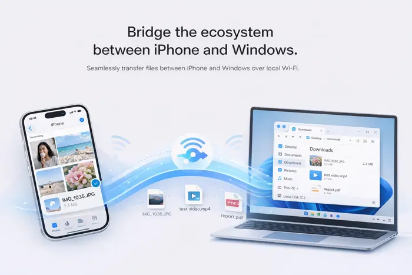

AirDrop for
Windows
Send files and copy clipboard between iPhone and Windows instantly

Meet WinSend
The missing AirDrop for Windows
Make file transfers between iPhone and Windows as simple and fast as AirDrop
Everything you need
for seamless file transfer
Powerful features, simple experience
Instant Transfer
AirDrop-style transfer experience, as simple and intuitive as the Apple ecosystem
Local Wi-Fi Transfer
High-speed file transfer on the same Wi-Fi, instant for small files, fast for large files
No Compression
Photos and videos maintain original quality, no compression, perfect for designers and photographers
Shortcut Clipboard
Use iPhone Shortcuts to trigger clipboard sync with just a tap on the back, without opening the app
Large File Support
Support large file transfers, easily send videos and design files, no size limit
Clipboard Sync
Automatically sync clipboard, text copying can be automatically synced between devices
Built for everyone
Suitable for various scenarios and professional needs
Transfer Photos
Transfer iPhone photos to PC losslessly
Send Large Videos
Send large video files instantly
Design Files
Share design files between devices
Documents
Quickly move office documents
Why WinSend?
Bridging the gap between iPhone and Windows
AirDrop
WinSend
Frequently Asked Questions
Everything you need to know about WinSend
Is WinSend safe?
Yes. WinSend is built with privacy in mind.
Your data never leaves your devices — no cloud, no accounts, no tracking.
Everything is transferred directly over your local network.
Why does Windows show "Protected your PC"?
This is a standard warning from Microsoft Defender SmartScreen.
It appears for new or unsigned apps that haven't built reputation yet — not because the app is unsafe.
To continue, click "More info" → "Run anyway."
Does WinSend require internet?
No.
WinSend works entirely on your local network (WiFi).
Your data stays private and never passes through external servers.
Does it work with iPhone and Windows?
Yes — that's exactly what WinSend is built for.
Instantly share clipboard content between your iPhone and Windows PC.
Do both devices need to be on the same WiFi?
Yes.
Both devices need to be connected to the same network to communicate directly.
Is WinSend free?
Yes. WinSend is currently free to use.
What can I transfer?
Text, links, and anything you copy to your clipboard.
Copy on one device, paste on the other — instantly.
Ready to transfer?
Download WinSend and experience seamless file transfers between iPhone and Windows